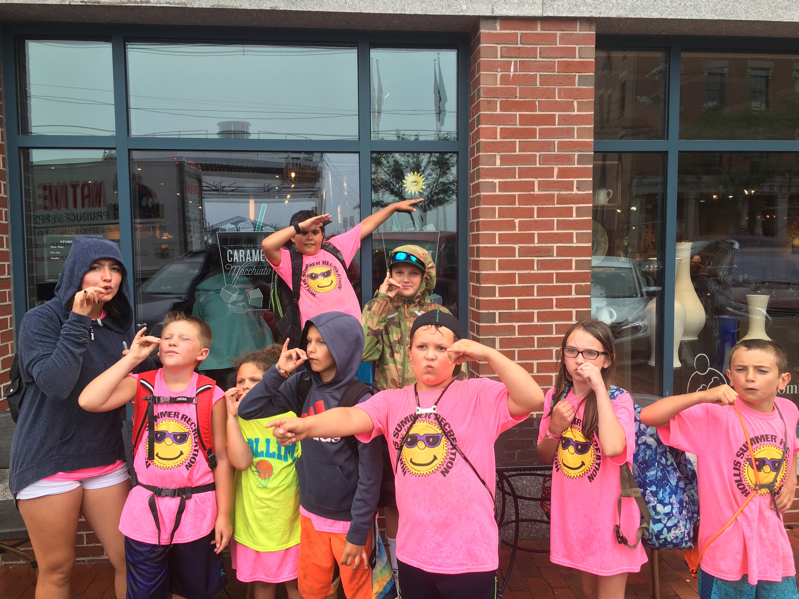
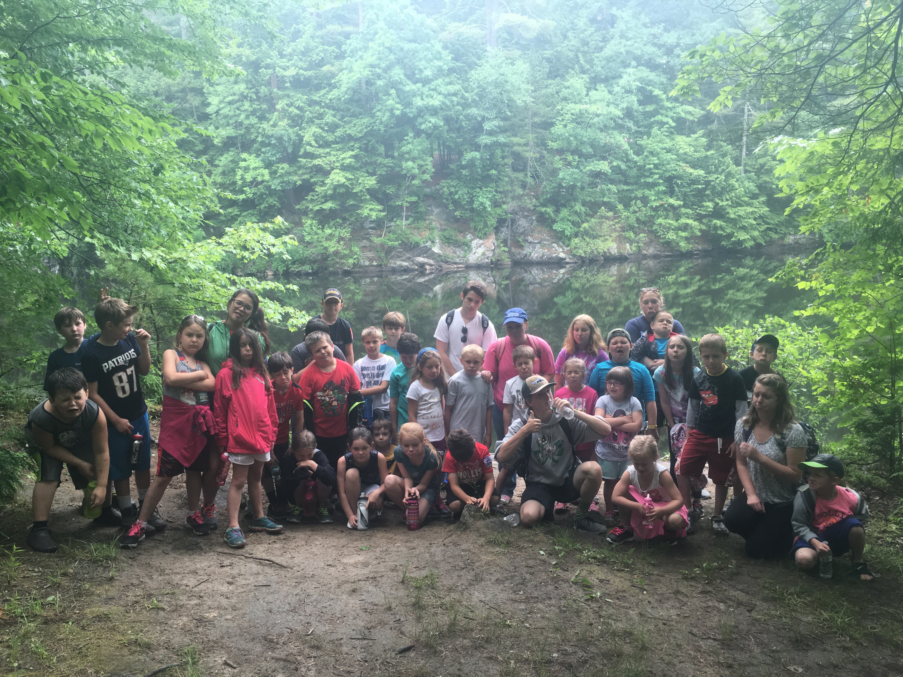
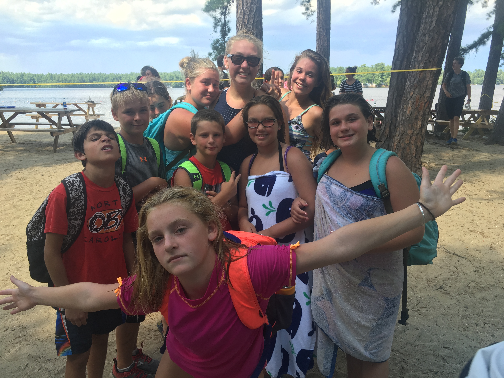
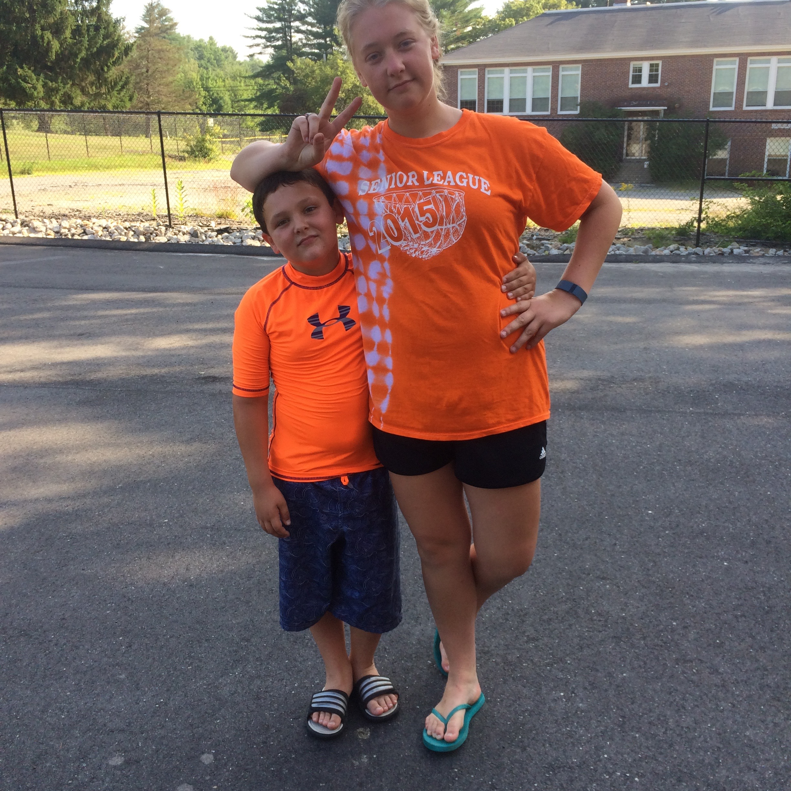
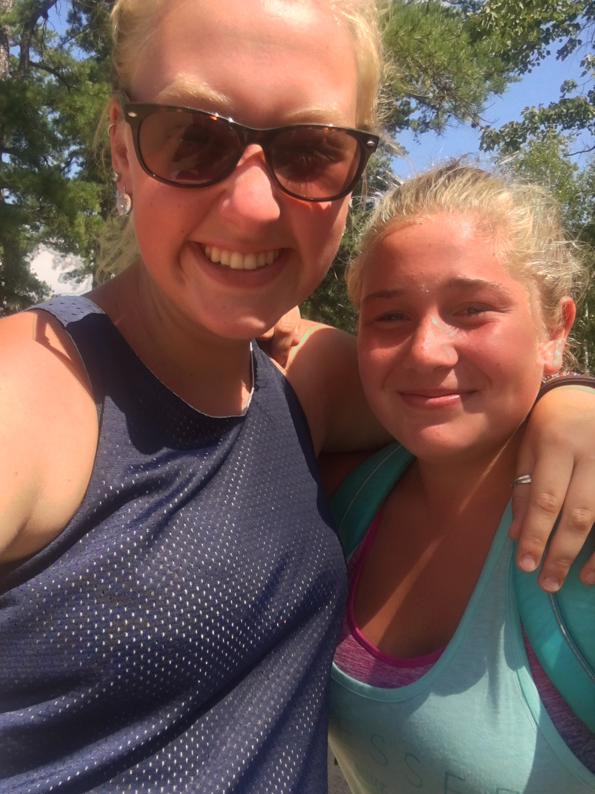

Thus far, I have only held three jobs since I was fifteen! One was with a local craft business, called By Design Laser Art, With this job I was able to travel new england going to all the craft fairs. From Hampton, MA onto Queechee, VT and Back to Central Maine, I traveled, met many new people and saw many new things while traveling with the business.
Second Job I have held was working as a camp counselor for the Hollis Parks and Rec Department. I would work with kids ages K-8, during the summer we took field trips to places such as beaches, hikes, waterparks and other fun summer activities! During the school year, I was a counselor in the after care program. I held this job at the same time I was working my current job at Marshalls in Scarborough, ME.
Below are some pictures from my time working with the Recreation Department
    